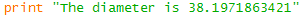
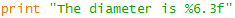
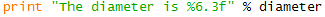
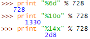
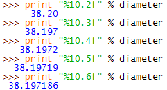
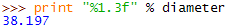
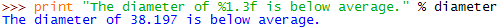
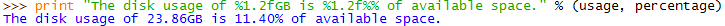

Output Formatting
To get output like this,

instead of this,

Build a
printstatement with the string,
Replace the numerical value with a formatting placeholder,

The placeholder specifies the way the value should be formatted. For instance in %6.3f, the f says it should be formatted as a floating point value (one with a decimal place) in a field 6 characters wide with 3 characters after the decimal place.
-
Then specify a variable whose value should be interpolated into the placeholder position using the interpolation operator %,

This final version produces the desired output,
The formatting codes are derived from those originally used by the language C and now also used by the languages C++, AWK, Perl, and PHP among others. Each format placeholder has the form,
%[optional arguments]letterThe % sign indicates the beginning of a placeholder.
The letter indicates the desired format:
| Letter | Format |
|---|---|
| d | decimal integer |
| o | unsigned octal integer |
| x | unsigned hexadecimal integer |
| f | floating point |
| s | string |
All these take an optional argument specifying the width of the field in which the value should be displayed, e.g.

The floating point code takes an additional argument specifying the number of digits to display to the right of the decimal point, e.g.

Note that if a field width is narrower than the value to be displayed the field is enlarged to fit the value, e.g.

this can be helpful when you want to insert numerical values into sentences (rather than some tabular format), e.g.

If you need to display multiple values enclose the interpolating variables in parentheses, e.g.

This example also illustrates that to output a literal % character you need to use a pair of them.
There is much more to string formatting than is shown here. For the details start with the Python Library Reference Section 3.6.2. More details can be found in the Gnu AWK manual Section 4.5